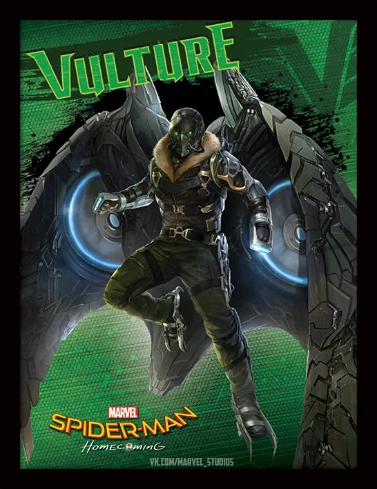
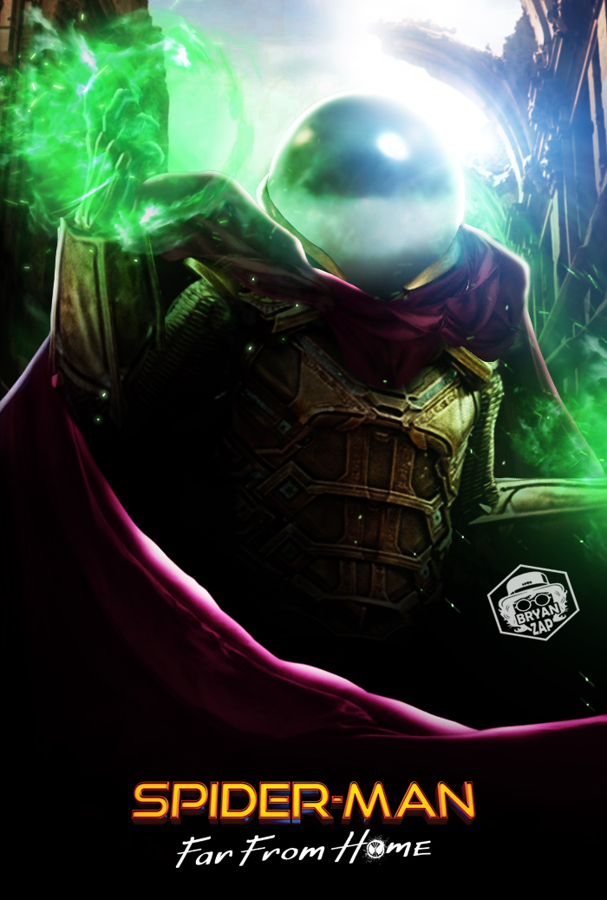
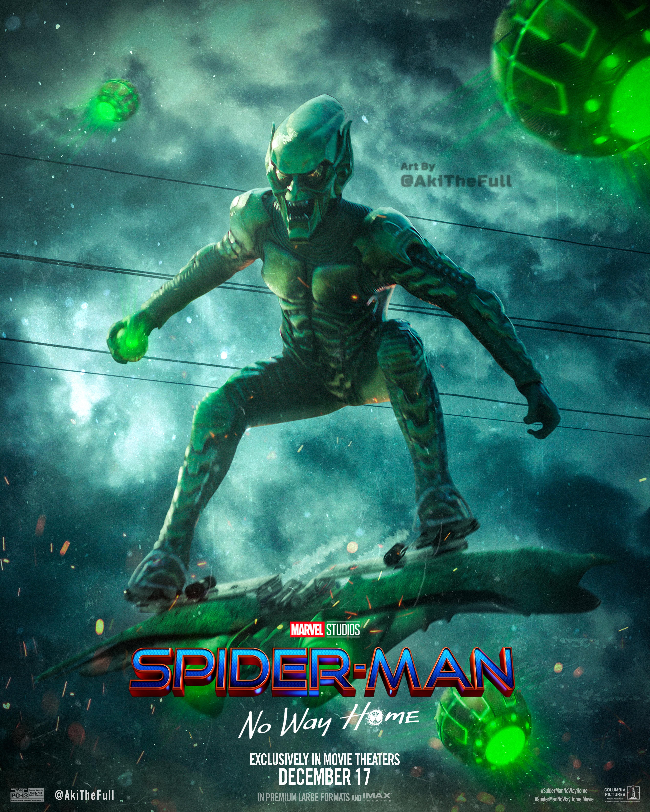

The Vulture (Adrian Toomes)
Adrian Toomes was a hardworking salvage contractor who lost his business after Tony Stark and the government took over cleanup operations following the Battle of New York. Feeling betrayed by the system, he repurposed salvaged alien technology to create powerful weapons and a winged exosuit, becoming the Vulture. Toomes built a criminal empire, selling high-tech weaponry to street-level criminals while keeping his true identity hidden. Unlike other villains, he was motivated by financial survival and a desire to provide for his family rather than pure evil. He became a serious threat to Spider-Man, forcing Peter Parker to prove himself as a hero without relying on Iron Man’s help. Their final confrontation tested Peter’s morals, as he ultimately chose to save Toomes rather than let him die. In the end, Toomes was imprisoned but kept Spider-Man’s identity a secret, hinting at potential future conflicts.
Mysterio (Quentin Beck)
Quentin Beck was a former Stark Industries scientist who specialized in creating advanced holographic technology. Once a devoted employee, he became disillusioned and bitter after Tony Stark dismissed his work, branding it as unstable. Determined to prove himself, Beck assembled a team of disgruntled ex-Stark employees and developed an elaborate plan to gain global recognition. Using drones and illusions, he created fake elemental monsters, portraying himself as a new superhero known as Mysterio. Manipulating Spider-Man’s grief over Tony Stark’s death, he tricked Peter into giving him control of the powerful E.D.I.T.H. system, granting access to Stark's vast arsenal. However, his arrogance led to his downfall, as Peter saw through his deception and ultimately defeated him. Despite his apparent death, Beck’s influence lived on, as he posthumously exposed Spider-Man’s identity to the world, setting the stage for Peter’s greatest challenge yet.
Green Goblin (Norman Osborn)
Norman Osborn, the brilliant but unstable scientist from another universe, was transformed into the Green Goblin after an experimental serum enhanced his abilities while also fracturing his mind. Originally from Sam Raimi’s Spider-Man (2002), he was transported into the MCU due to Doctor Strange’s spell, along with other villains from different realities. At first, Osborn appeared lost and vulnerable, struggling against his darker persona, but the Goblin eventually took over, resuming his reign of terror. He manipulated Peter Parker’s kindness, gaining his trust before ruthlessly betraying him. His brutal actions, including the devastating death of Aunt May, pushed Peter to the brink of revenge. However, with the guidance of the other Spider-Men, Peter chose not to kill Osborn, instead curing him and freeing him from the Goblin’s influence.